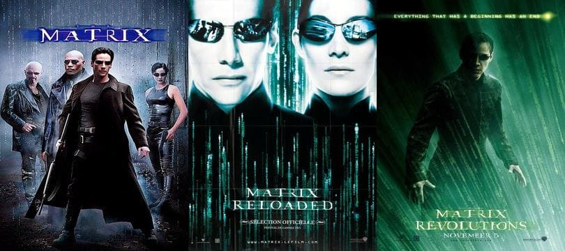

Films les plus connus
- 1989 : L'Excellente Aventure de Bill et Ted
- 1991 : Point Break
- 1992 : Dracula
- 1994 : Speed
- 1997 : L'Associé du Diable
- 1999 : Matrix (saga)
- 2005 : Constantine
- 2013 : 47 Ronin
- 2014 : John Wick (saga)
Keanu commence sa carrière d'acteur à l'âge de neuf ans.
Il Joue dans beaucoup de films pour adolescents qui seront pour la plupart mauvais.
Pour la plupart, oui, car 2 films connaîtront du succès : Le Fleuve de la mort (1986)
et L'Excellente Aventure de Bill et Ted (1989).
En 1990, Reeves commence à sortir de sa période de films pour adolescents grâce au films d'action Point Break.
Devenu une valeur sûre d'Hollywood, l'acteur tente d'échapper à l'image de jeune premier, sex-symbol, qui lui colle à la peau, et d'acquérir la reconnaissance de ses pairs en tournant sous la direction de réalisateurs renommés.
Ayant déclaré dans la presse vouloir jouer avec des réalisateurs indépendants, il est contacté par Gus Van Sant pour interpréter un prostitué dans My Own Private Idaho et accepte rapidement le rôle.
En 1994, il retrouve l'action pour le thriller à suspense Speed avec une jeune inconnue, Sandra Bullock. Le blockbuster est un carton critique et commercial, et apporte à ses jeunes stars une reconnaissance internationale.
S'ensuit une poignée d'échecs commerciaux (je vais pas les lister, go regarder sur Wikipédia).
Première saga de Reeves qui va être un succès mondial et qui va redonner un souffle à sa carrière. Ce chef-d'œuvre d'effets spéciaux restera un des plus gros succès de l'histoire du cinéma de science-fiction.
Reeves va jouer dans tous les films de la saga, qui sont :
Il jouera dans le 4e film Matrix 4 qui sortira en 2021.

Autre saga avec notre cher Reeves en rôle principal.
Mais cette fois dans le rôle d'un bad guy : en effet, il incarne un ancien tueur à gages en quête de vengeance après le vol de sa voiture et le meurtre de son chien, dernier cadeau de sa femme décédée.
Liste des films :